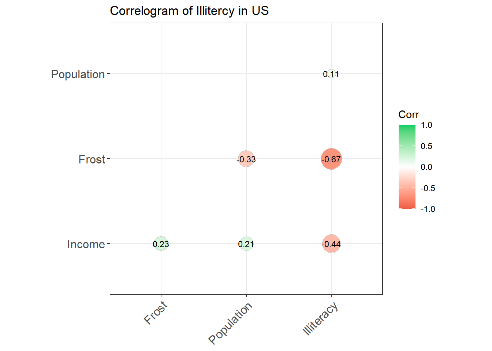
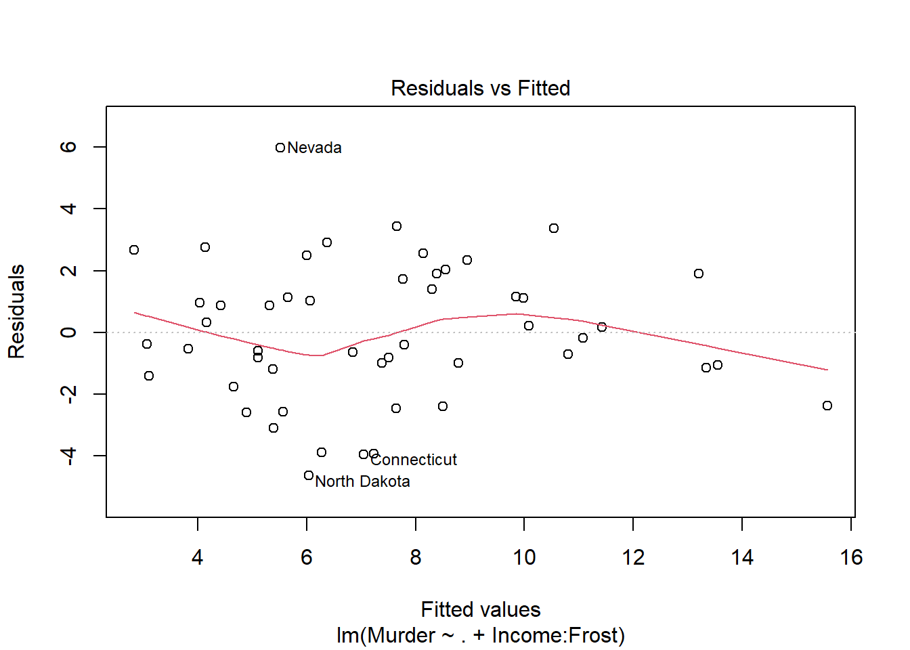
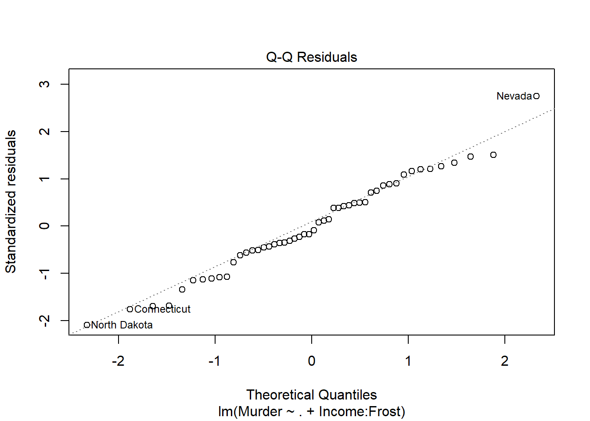
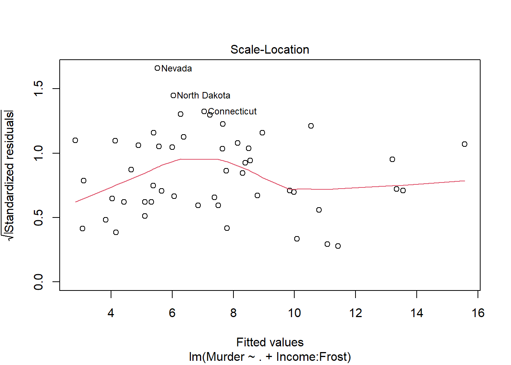
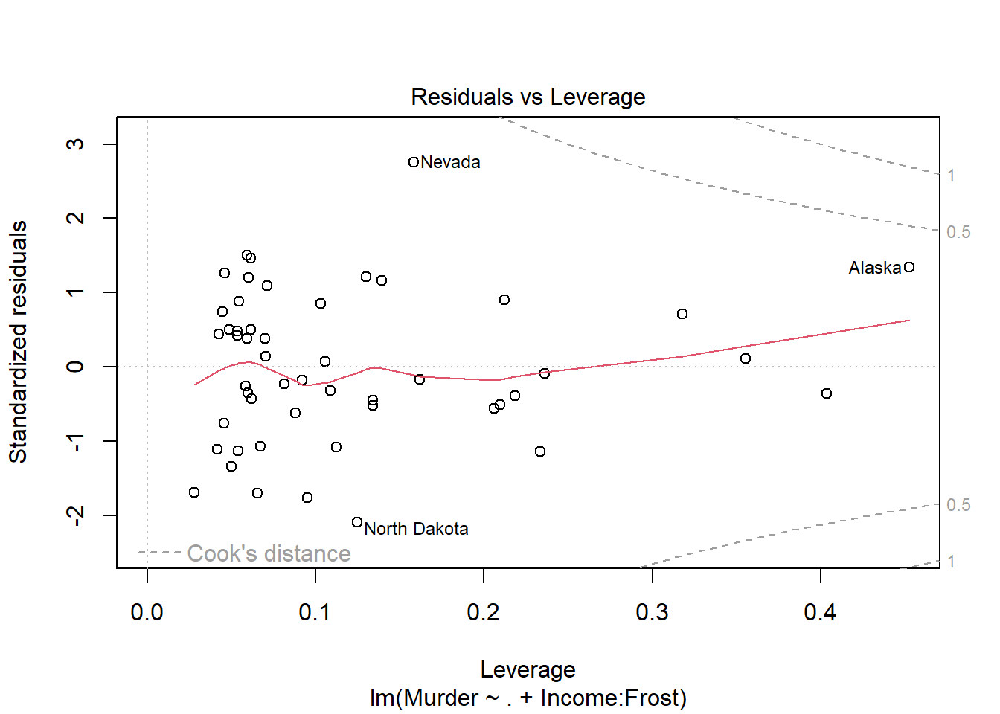
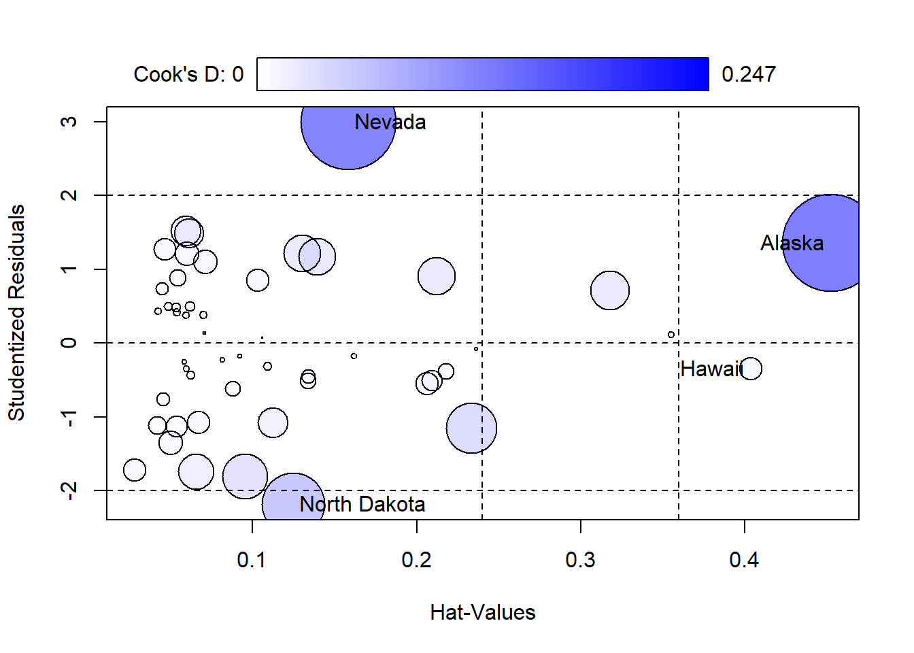

The state.x77 builtin database contains the murder data of US. We will analyse the cause of a murder in US. The following variables are analyzed using regression analysis:
Murder Statistic
Murder
Population
Illiteracy
Income
Frost
murder rate per 100,000 population (1976)
Population as of 1974
Illiteracy (1970, percent of population)
Per capita income (1974)
mean number of days with minimum temperature below freezing (1931-1960)
The regression analysis below shows significant t values in Illiteracy and population.
states =as.data.frame(state.x77[,c('Murder','Population','Illiteracy','Income','Frost')])s2 <- stateslm1 <-lm(Murder ~ . , data=states)summary(lm1)
Call:
lm(formula = Murder ~ ., data = states)
Residuals:
Min 1Q Median 3Q Max
-4.7960 -1.6495 -0.0811 1.4815 7.6210
Coefficients:
Estimate Std. Error t value Pr(>|t|)
(Intercept) 1.235e+00 3.866e+00 0.319 0.7510
Population 2.237e-04 9.052e-05 2.471 0.0173 *
Illiteracy 4.143e+00 8.744e-01 4.738 2.19e-05 ***
Income 6.442e-05 6.837e-04 0.094 0.9253
Frost 5.813e-04 1.005e-02 0.058 0.9541
---
Signif. codes: 0 '***' 0.001 '**' 0.01 '*' 0.05 '.' 0.1 ' ' 1
Residual standard error: 2.535 on 45 degrees of freedom
Multiple R-squared: 0.567, Adjusted R-squared: 0.5285
F-statistic: 14.73 on 4 and 45 DF, p-value: 9.133e-08
The above regression result show R-squared of 56%, implying the independent variables define the dependent variable 56%. The Illiteracy clearly corresponds to increased murders, however there the illiteracy rate is correlated inversely to income and frost, as shown in below correlogram.
library(ggcorrplot)
Loading required package: ggplot2
Warning: package 'ggplot2' was built under R version 4.2.3
ggcor <-cor(states[,-1])ggcorrplot(ggcor, hc.order =TRUE, type ="lower", lab =TRUE, lab_size =3, method="circle",colors =c("tomato2", "white", "springgreen3"), title="Correlogram of Illitercy in US", ggtheme=theme_bw)

We needed to be sure if these two were causes for the illiteracy in general. So, to find the causative effect we have to further find the effect of these two interactions on the Murder. The greater value of R-squared means the model is fitted better for the forecasting.
Call:
lm(formula = Murder ~ . + Income:Frost, data = states)
Residuals:
Min 1Q Median 3Q Max
-4.6351 -1.1679 -0.2744 1.6419 5.9772
Coefficients:
Estimate Std. Error t value Pr(>|t|)
(Intercept) 2.451e+01 9.150e+00 2.679 0.01036 *
Population 2.714e-04 8.622e-05 3.148 0.00295 **
Illiteracy 2.344e+00 1.043e+00 2.247 0.02973 *
Income -4.503e-03 1.769e-03 -2.545 0.01450 *
Frost -1.867e-01 6.829e-02 -2.733 0.00900 **
Income:Frost 3.922e-05 1.417e-05 2.768 0.00822 **
---
Signif. codes: 0 '***' 0.001 '**' 0.01 '*' 0.05 '.' 0.1 ' ' 1
Residual standard error: 2.366 on 44 degrees of freedom
Multiple R-squared: 0.6312, Adjusted R-squared: 0.5893
F-statistic: 15.06 on 5 and 44 DF, p-value: 1.296e-08
The R-squared has increased to 63% and the population has also become significant contributor, the income and frost are indeed intervened to the increased illiteracy rate, so both issues could also be addressed together and not separate. Usually high income people resided in greater frost areas, like-wisely these areas had lesser illiterates as clear from the correlogram above.
Outlier Test
The outliers are data points which do not completely fit in an ideal model and removing these outliers, we could have a model for a better forecasting.
library(car)
Loading required package: carData
plot (lm1,ask = F)




car::outlierTest(lm1)
No Studentized residuals with Bonferroni p < 0.05
Largest |rstudent|:
rstudent unadjusted p-value Bonferroni p
Nevada 2.991931 0.0045772 0.22886
The Bonferroni p is rather a more stringent criteria, In above, Nevada could be an outlier or it could be not an outlier considering the bonferroni p; In such a grey area, it solely dependent on the type of data and visual perception to exclude it or not.
Influence Plot
car::influencePlot(lm1)

StudRes Hat CookD
Alaska 1.3519482 0.4526362 0.24725649
Hawaii -0.3504961 0.4037481 0.01414625
Nevada 2.9919305 0.1580994 0.23728729
North Dakota -2.1814462 0.1245126 0.10392049
We can visualize which states have higher residual values and hence affecting the model adversely in above plot or we can find the high residual values as follows:
sort(residuals(lm1))
North Dakota Connecticut Massachusetts Rhode Island Minnesota
-4.6351037 -3.9508817 -3.9321050 -3.8769752 -3.0941730
Iowa Wisconsin New Jersey Pennsylvania Louisiana
-2.5920895 -2.5690196 -2.4454261 -2.4006150 -2.3679373
Nebraska South Dakota Oregon Texas Mississippi
-1.7603972 -1.4014880 -1.1767318 -1.1414346 -1.0590364
Arizona Oklahoma West Virginia Washington Arkansas
-0.9920987 -0.9887473 -0.8078434 -0.8070507 -0.6997168
Hawaii Kansas New Hampshire Ohio Maine
-0.6467861 -0.6016978 -0.5238584 -0.3911226 -0.3718196
New York South Carolina California Utah Idaho
-0.1769995 0.1733659 0.2118959 0.3349708 0.8801093
Delaware Montana Indiana North Carolina Colorado
0.8827238 0.9677768 1.0284071 1.1221828 1.1465536
Tennessee New Mexico Virginia Alabama Illinois
1.1588588 1.3944265 1.7243861 1.8994800 1.9118831
Kentucky Alaska Maryland Florida Vermont
2.0421557 2.3444490 2.4906459 2.5579925 2.6700388
Wyoming Missouri Georgia Michigan Nevada
2.7599325 2.9219468 3.3624239 3.4473389 5.9772102